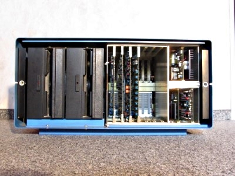
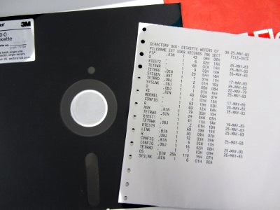

On this Page I will present some of my Projects I have been working on or am currently working on. I am still heavily working on it, so please expect some errors, mistakes or missing content.



I was born 2001, live in Germany and am Interested in all kinds of electronics since I was a child. I got interested into Vintage Computing around my age of 15, but I could not say what started it. Currently I am in possession of a bunch of old Computers, ranging from homebrew Microcomputers to all kinds of Personal Computers.
Contact: Please feel free to contact me or report any mistakes or problems about this website at maggihashtag9295(at)gmail(dot)com